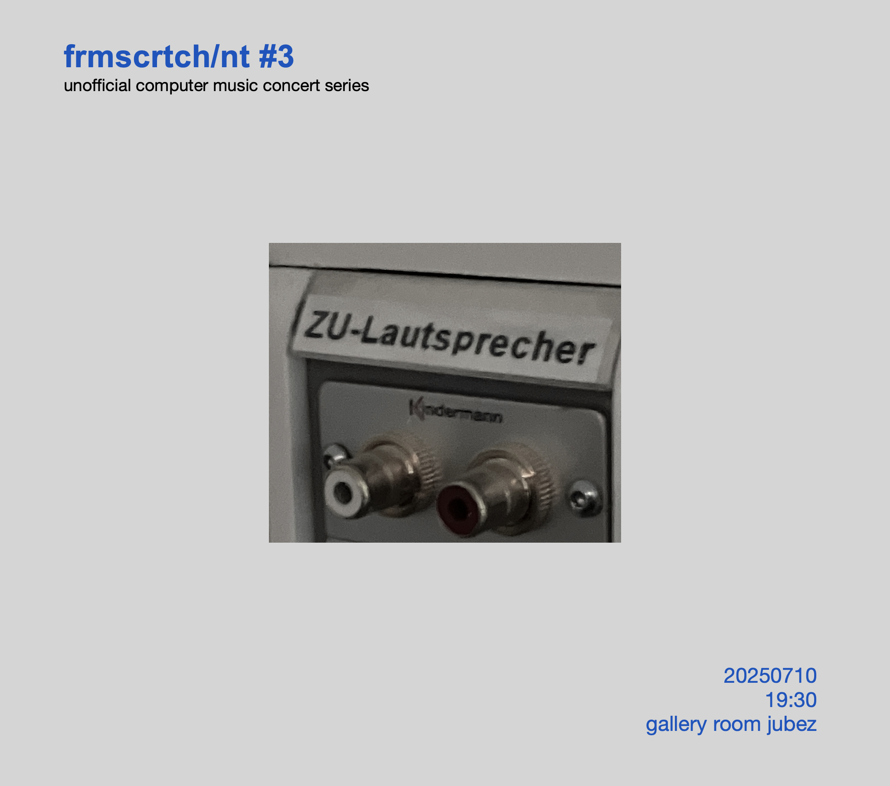
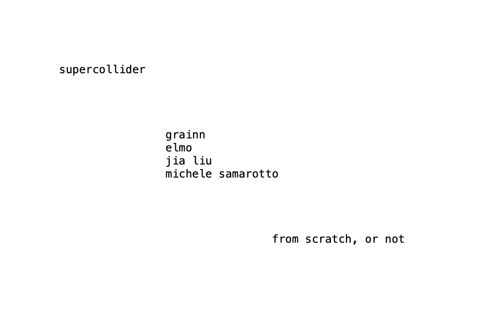

_\|/_
TOPLAP Karlsruhe
Totally Over Produced Lonely Acoustic People, or
Upcoming Events 
-
@
Jubez
Are you interested in live-coded music and graphics, algorithmic poems or other code-involving art forms? The meetup wants to offer opportunities for encounters for coders, musicians and artists, and open up spaces for inspiring discussions and exchange. Don’t forget to bring your laptop.
* Write us a message beforehand to make sure you'll find us :)
Past Events
-
Moe Fukuda | Benjamin Miller | Jia Liu | Daniel Höpfner | Andres Kaufmes | Matthias Schneiderbanger | Anselm Weber
-


grainn | jia liu | elmo | michele samarotto
-
, iterative ßpace
#4 @ ßpace
with Naoki Nomoto | Jia Liu | irel.ier | Michele Samarotto | Daniel Höpfner
-
, GPN23 @
ZKM
16:00 - 17:30 Lounge (live coding):
SineWaveSurfer | pRovInzhOrsT | osc()_peterson | eddyflux14:00 - 15:30 Outdoor (dj):
cicada & dkyuh -
,
Algorave w/
Renick Bell @ AKK
with Elmo | dyuh | cicada | Andres Corsair | Michele Samarotto (Karlsruhe) | surprise acts | Renick Bell
-
,
computer_music.club @ C2 OST
with Blaž Pavlica (Ljubljana) | c_robo_ (Los Angeles) | cicada (Karlsruhe) | dj mar (Karlsruhe) | dkyuh (Karlsruhe) | Michele Samarotto (Karlsruhe) | nervousdata (Freiburg) | Nesso && Bruno Gola (Berlin)
-
,
computer_music.workshop @ ßpace
with Blaž Pavlica (Ljubljana) | c_robo_ (Los Angeles)
- , Type Techno 2.0 P8
-
,
Algorave @ jubez with Linalab (Barcelona), Bruno
Gola (Berlin), Dennis Scheiba (Köln),
Kaspars Jaudzems (Riga), Hanna Kassel - visual
(Landau), jan Ten (Karlsruhe)
- , iterative ßpace #3 drone edition @ ßpace with Daniel Höpfner, Michele Samarotto, Anselm Weber
-
,
Pattern Workshop by Alex McLean @ ßpace
- , Algorave @ Rudolf5
-
,
show and tell @ jubez gallery room
froos: kabelsalat
danomatika: PdParty -
,
show and tell @ jubez gallery room
kby: live typo
jasmin: notes on nostalgic and minor tech - , frmscrtch/nt #1 @ jubez gallery room
- , toplap_ka at GPN Lounge @ HfG Karlsruhe
- , frmscrtch/nt #0 @ jubez gallery room
-
,
CodeCollision @ jubez
Workshop and concert with Elmo, Daniel Höpfner, eddyflux, nervousdata, and Michele Samarotto -
, weirdwithcode, nervousdata, Daniel Höpfner
coding visuals @
isle of coding @ ZKM Isle Hub on the
Forecourt Karlsruhe (DE)
-
, TOPLAP20 @
Eulerroom
Happy birthday, TOPLAP!
- , Type Techno @ AKK
-
,
iterative ßpace #2 @ ßpace
Concert and meet-up with robotcowboy, Jia Liu, eddy flux, and Ralt144mi -
KAMUNA 2023 @
ZKM
Karlsruhe (DE)
-
live coding meet-up @
Jubez Karlsruhe
(DE)
-
,
Daniel Höpfner, Jakob Schreiber & Kaspars Jaudzems
coding visuals @
isle of coding @ ZKM Isle Hub on the
Forecourt Karlsruhe (DE)
-
,
live coding meet-up @
Jubez
Karlsruhe
(DE)
-
, Strudel
Workshop
@ ßpace Karslruhe
(DE)
with Felix Roos, main developer of Strudel -
Saturday, May 6th 2023, Algorave
@ triangle.space
Karslruhe (DE)
with pRovInzhOrsT, Daniel Höpfner, SineWaveSurfer, Andres Corsair and Visuals by Paul Henri. » More info -
Sunday, April 16th 2023, Iterative ßpace
@ ßpace
Karslruhe (DE)
Concert and meet-up with Alicia Champlin (US) & Niklas Reppel (DE), Grimberg (DE) and locals El Lukijanov, Jia Liu & Michele Samarotto, Daniel Höpfner and Ben and the Minibrots. » More info -
Saturday, April 15th 2023, Algorave
@ Jubez Karslruhe
(DE)
with timo (NL), Niklas Reppel (DE), Alicia Champlin (US), Pondskater (DE), nervousdata (DE) and locals pRovInzhOrsT, SineWaveSurfer and Michele Samarotto & Daniel Höpfner. » More info -
Friday, December 2nd 2022, Live Coding Concert @
Insterburg Karslruhe (DE)
with pRovInzhOrsT, dkyuh, Elmo, luiiuuuiiiii, Michele Samarotto, Kaspars Jaudzems (asystemofcells), Andres Corsair and friends. -
Saturday, May 21st 2022, Algorave @ Jubez Karslruhe (DE)
TOPLAP Karlsruhe showcase with Attrique Orgeat, dkyuh, Elmo, luiiuuuiiiii, Lukijanova, Michele Samarotto and Okbaj. » More info - Sunday, February 27th 2022
TOPLAP Karlsruhe inaugural live stream
_\|/_
-
TOPLAP Karlsruhe _\|/_ Community Report
Presented at the International Conference on Live Coding 2023
Live Coders
- Benoît and the Mandelbrots
- Atrique Orgeat
- luiiuuuiiiii
- El Lukijanov
- Kaspars Jaudzems (asystemofcells)
- dkyuh
- pRovInzhOrsT
Add yourself via GitHub or get in touch ...
Who we are
We are a live coding community based in Karlsruhe, Germany. We want to meet regularly in the physical and virtual space, organize workshops and concerts and connect with other live coding communities all around the globe.
Get in touch
Want to join us? We're currently mostly organized via a Signal chat group and Discord. Send us an email with a quick introduction of yourself and what you do and we'll add you! If you have any other inquries also don't hesitate and write.
Code of Conduct
The Short Version
We are dedicated to providing a harassment-free experience and a safer space for everyone, regardless of gender, gender identity and expression, age, sexual orientation, disability, physical appearance, body size, race, ethnicity, religion (or lack thereof), technology choices, and so on. This applies both in person or via online media.